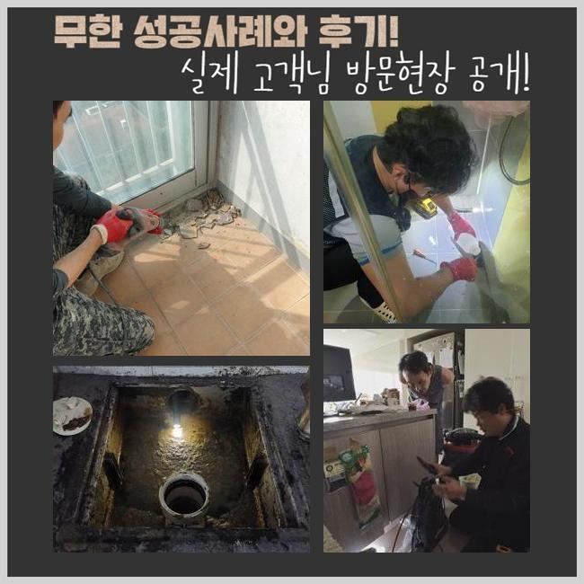
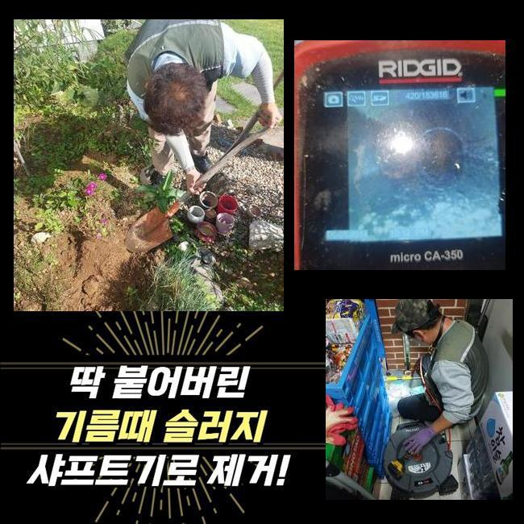
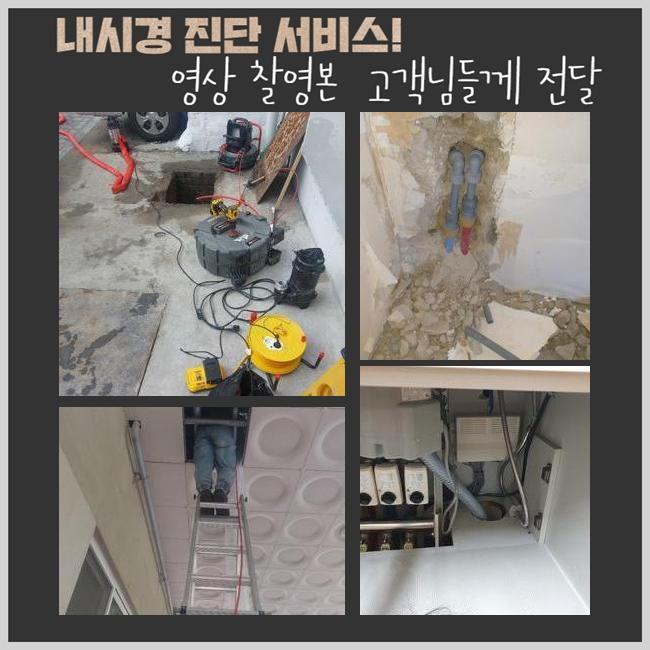
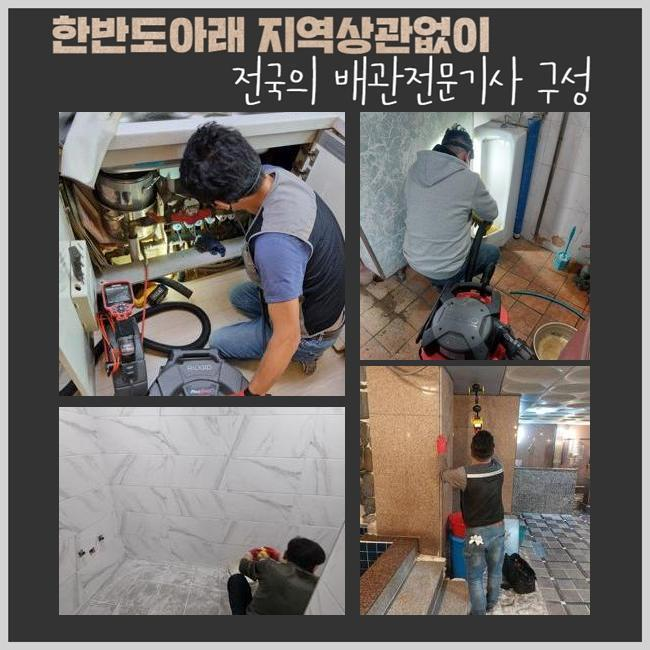
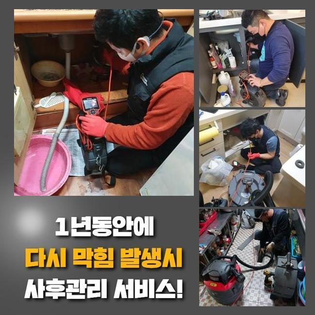
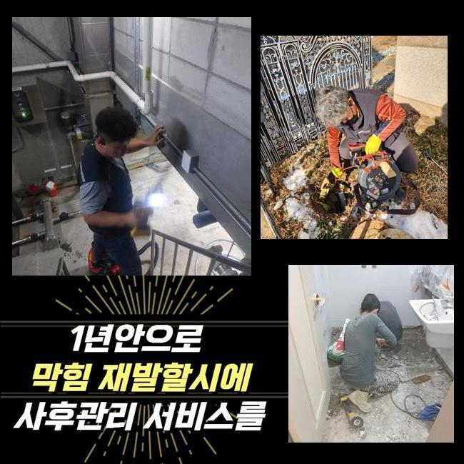

🏠 용인 신봉동싱크대배수관막힘 상현동 하수구청소장비 배관전문
용인 신봉동 싱크대막힘 전문 시공 후기

📋 작업 개요
- 위치: 용인 신봉동, 신봉동, 용인
- 서비스 유형: 싱크대막힘, 하수구막힘, 배관막힘, 역류해결, 뚫는업체, 배관청소, 설비공사
- 작업 일시: 2024. 10. 9. 3:39
- 업체명: 하수구수사대 (010-5615-2118)
🔍 문제 상황
용인 신봉동싱크대배수관막힘 상현동 하수구청소장비 배관전문
주거 환경이나 비즈니스 공간 영화관같은 공용시설에서 하수가 정상 배출되지 않는 상황을 최소 한 번은 느껴보셨을텐데요
이렇게 되면 하수를 흘려보낼 수가 없고 냄새나 역류와 같은 일들까지 같이 유발되기 때문에 이것저것 따지지말고 조속히 복구와 수정을 해줘야 합니다
하수구의 전문 관리 비용을 가늠하기가 어려워서 자체적으로 수리를 시도하기도 하지만 이 방법은 단시간만 효과가 있는 해결책일 뿐입니다
이번 케이스의 경우에는 욕실의 하수구 장애로 어려움을 경험하셨던 장소였습니다
이야기를 조금 나눠봤더니 이와 같은 답답한 상황이 예상치도 못했는데 급격히 발현됐다고 하셨어요
평상시처럼 씻으시다가 물 배수가 시원찮은 것에 뭐 때문인지 답답해서 관련 정보를 찾아보니 하수구가 막혀버렸구나 하는 확정을 하시게 됐다고해요
뜨거운 물을 받아서 아래로 부어보기도 하고 그럼에도 나아지지 않아서 툴들을 여러 개 써봤는데 상황은 반대로 악화되어가는 모습이었다고 합니다
다른 분이 액체클리너 제대로 뚫어준다는 문구에 별 고민없이 사버렸는데 암만 써봐도 변동이 없어서 전문스킬이 필요하겠다 생각하셨대요
별일 아닐거라고 가볍게 보고 용감하게 홀로 도전하시는데 상상하시는 것이랑은 딴판으로 제대로 수선하기는 어려워요
원래 처해있던 문제보다 심화시켜버릴 수도 있으며 시공 소요시간만 늘리게하는 무의미한 활동일 수 있어요

🔎 원인 분석
💡 전문가 진단: 정밀 진단 장비를 사용하여 슬러지의 고착 여부를 판명하고 타격/세척 작업을 실시했습니다.
화장실에 들어가서 보니 단순한 막힘에 그치지 않겠다고 예상이 됐었는데 혼탁해진 물이 구멍 안에 잔뜩 들어가 있었고 거꾸로 역행하는 것을 동시에 알아차리게 됐어요
장시간 많은 하수구를 고친 전문적 시선으로 추론해 봤는데 깊은 관로 안에 중중한 일이 있을 것 같았어요
확정할 수 있을 만큼 증거물을 확보하려면 배관 내시경의 동원이 들어가야된다 싶어서 기계를 바로 세팅했어요
관로를 따라서 기기를 주입을 해서 보았더니 각종 노폐물들이 상당량 집적된 모습이었어요
이같은 문제점을 고객님과 송출되는 상황을 실시간으로 보여드리며 어떤 사정인지를 얘기해 드립니다
보이는 부분 외에도 훨씬 더 많을거라는 사실을 알고 있었기에 다른 이물질의 종류나 상태를 조사하는 게 필요했으므로 더 밑으로 내시경을 진입시켜서 조사를 이어갔어요
기름 슬러지랑 각질들이 한데 어우러지고 밀착되어 관로를 가득 메우고 있었고 이 부분이 핵심 원인이라는 느낌이 강하게 들었습니다
섬유 조각이나 머리카락같은 각종 노폐물들이 집적되다가 거대한 덩어리로 뭉친 것을 석회화가 됐다고 해요
강한 석회화가 이루어졌다면 보통 일반인들이 간에 기별도 안갈겁니다
오랜기간 동안 한몸이 되어서 고착화도 진행되어서 적당한 세기로 공격해서는 겨우 일부만 제거될 겁니다
다양한 환경에 적용하는 장비력을 소장하고 있는 전문업체에 해결해달라 의뢰하신다면 교체에 버금가는 서비스를 해드리게 돼요

🔧 작업 과정
사용하기에 전혀 문제가 없도록 잘못된 곳을 다 고쳐서 잘 돌아가는 배관 시스템을 다시 제공받으실 수 있어요
예방 용도로 전문가를 불러서 클리닝을 겸해주신다면 마음이 편한 설비의 안전을 지속하실 수 있습니다
노하우를 바탕으로 보니 오염물질의 절대적인 양과 뭉친 정도를 종합해보니 쉽게 극복할 수 있는 사안이 아닐거라는 평가를 내릴 수 있었죠
기기를 들이대지 말고 미리 샤프트를 활용해서 믹서기처럼 이물질들을 분해하는 작업을 거쳐야할 듯 했어요
내부를 관찰했는데 이물질들이 그다지 크지는 않고 와해되기 쉽다고 보인다면 석션기계만을 주입하여 확 끌어당겨주기만 해도 빠르게 마무리되기도 해요
이번 배관 속에는 찌꺼기 뭉치가 돌덩이처럼 응겨붙었고 대형 규모였던만큼 조각화를 내주는 과정이 피할 수 없는 상황이었죠
샤프트 장비를 자세히 설명드리면 제일 앞 머리 부분에 체인같은 팁이 있는데 이게 계속 돌아가면서 딱딱한 덩어리에 자극을 가하여 세분화 해줍니다
유연한 샤프트 기기를 안으로 삽입해서 작업에 착수하며 세기를 적절히 조절해 가면서 매끈한 물길이 다시 나오도록 오염원을 덜어내는 과제를 전적으로 끝내게 되었어요
숙련공의 손기술이 필수적인 사유는 강직도가 있는 오물의 입자가 사방으로 튀면 배관이 부상을 입어버리기 때문입니다
낡은 배관의 일부가 더 큰 자극을 받지 않도록 설비에 능통한 전문공이 진행하여야 시설이 다치지 않습니다
작게 분리된 석회의 조각들이 더 밑으로 흘러내려 갈 위험성도 동반하지만 이렇게 흘러들어간다면 이런 하수관의 장애가 도로 생겨버릴 수 있는거죠
마감이 이뤄지기 직전까지도 관로가 안전한지 깨끗한지 주시하며 작업을 이어갔고 추가적인 오염물질의 편린들이 머무르고 있는지 여부도 잘 봐줘야 재발 예방에도 기여할 수 있어요
부유하는 잔 조각들도 남김없이 바깥으로 끌어올렸고 매듭을 짓기 전에 물이 다시 잘 배출되는지 검사를 실시해 보았어요
처리를 했던 작업 내역을 눈으로 보실 수 있게 해드려야 비로소 걱정이 사라질테니 배관 내시경을 마무리에 들여보내게 되었네요
현재 배관의 상황을 아실 수 있게 화면을 공유하면서 만족하신 모습을 보이시면 마지막 페이지를 넘겼네요
오랜 시간동안 청명한 관로를 안정적으로 가져가시도록 향후 관리법까지도 전달을 해드린 부분입니다
비용이 겁나서 많은 분들이 몸소 나서는데 잘못하면 작업할 범위를 복잡하게 만들어 버리고 공사가 더 힘들어집니다
그다지 오래 유지되지 못하는 수박 겉핥기식 작업이다보니 시행착오 없이 전문청소를 요구하는 게 차도가 좋을 겁니다


✅ 작업 완료
빠른 속도로 현장에 장비를 챙겨 도착하고 기기들로 찌꺼기를 개통시키지 못하면 작업비를 청구하지 않고 있으니 그다지 부담가지지 마시고 의뢰 맡겨주시면 됩니다
하수구는 복잡다단한 설치물이라서 비전문가 혼자 말끔하게 뚫으려는 것은 결과가 나쁠 확률이 높아요
아무리 홀로 애쓴다해도 지치기만 하고 또 셀프작업 툴의 금액도 헛되이 사용될 수 있습니다
어떤 시간대라고 하더라도 현장에 나갈 수 있는 태세가 되어있습니다
하수구의 특정한 오류들이 인식되면 전문공을 알아보는 게 제일 바람직한 접근임을 강조하면서 글을 마무리해 보겠습니다




⚠️ 주방 싱크대 배관 막힘 예방 수칙
- ✅ 기름기가 묻은 식기나 프라이팬은 설거지 전 키친타올로 반드시 기름때를 닦아내세요.
- ✅ 주기적으로 싱크대 개수대에 뜨거운 물을 가득 받아 한 번에 내려 배관 내부 기름을 씻어내세요.
- ✅ 배수구 거름망을 미세한 필터로 사용하시고 음식물 찌꺼기가 틈으로 새어 들지 않게 관리하세요.
- ✅ 베이킹소다와 식초를 뜨거운 물과 함께 일주일에 한 번씩 부어주면 배관 살균과 막힘 예방에 좋습니다.
💡 핵심 정리
- 확실한 장비 작업(내시경 점검 및 샤프트 스케일링)으로 원인을 뿌리 뽑습니다.
- 작업 후 1년 이내에 동일한 부위 재발 시 100% 무상 A/S 서비스를 보장합니다.
- 서울 · 경기 · 인천 전 지역에 24시간 언제든 긴급 출동할 수 있도록 항시 대기 중입니다.
❓ 자주 묻는 질문 (FAQ)
🚨 용인 신봉동 싱크대막힘 문제로 고민이신가요?
정확한 원인 진단과 확실한 시공으로 재발 없는 해결을 약속드립니다.
24시간 긴급 출동 | 서울 · 경기 · 인천 전지역 | 1년 내 재발 시 무상 A/S